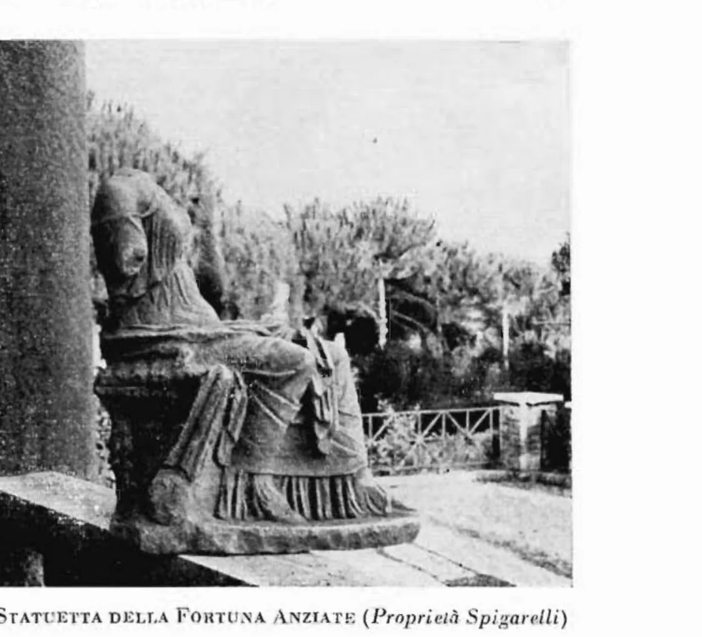

I monumenti della città alta
Lo xystus, Villa Spigarelli e le terme pubbliche: la vita di tutti i giorni sul pianoro di Santa Teresa, dai mosaici della Repubblica alle terme che fumavano ancora quando Roma stava cadendo.
Una città sotto i giardini
Cammina per Santa Teresa, ad Anzio, e stai camminando su un tetto. Sotto le villette e i viali del quartiere c'è il pianoro della città alta: quello che fu volsco, poi romano, chiuso dall'antico vallo. E sotto quel pianoro c'è ancora la città. Una grande palestra con le terme. Una villa repubblicana con i mosaici intatti, finiti per caso dentro una casa del Novecento. Le terme pubbliche, che scaldavano l'acqua ancora nel IV secolo. Niente di tutto questo si vede. È tutto lì sotto.
La villa che si nasconde dentro una casa moderna
A pochi passi dal teatro c'è il caso più strano dell'archeologia anziate. Si chiama Villa Spigarelli, ed è una villa moderna, costruita all'inizio del Novecento. Solo che chi la costruì la disegnò «in base alla pianta antica»: i muri nuovi seguono i muri vecchi, stanza per stanza. Sotto il pavimento di casa sono rimasti «integri i pregevoli pavimenti in mosaico, per lo più a disegni geometrici in bianco e nero». La villa moderna è il calco di quella romana.
E quella romana racconta tutta la storia della città in un solo edificio: «iniziato verso la fine della Repubblica (opera reticolata a piccoli elementi) e più volte ampliato fino ai tardi tempi dell'Impero». C'era un piccolo atrio con la vasca per l'acqua piovana, una sala da pranzo per l'inverno tutta dipinta, un corridoio coperto, ambienti di sostegno. L'ultima fase, alla fine del IV secolo, ha restituito una sala pavimentata di marmi pregiati, con la volta a botte alta cinque metri, e perfino un bancone per le bevande calde decorato di intonaco dipinto: un bar, diremmo oggi.
Dentro la villa è custodita una statuetta della Fortuna Anziate, la dea di casa: «una statuetta femminile seduta, scolpita in marmo […] appoggiata al lato destro del trono si vede la pala di un timone che la dea reggeva con la destra». Il timone, perché è la Fortuna che tiene la rotta. Proprio per la qualità di queste rovine qualcuno volle vedere a Villa Spigarelli il tempio della Fortuna: Lugli escluse l'idea, perché i resti hanno «il carattere di una costruzione privata, cioè di una ricca villa dei buoni tempi dell'Impero», ma vi fotografò frammenti di capitelli e cornici marmoree «di ottimo intaglio», di età domizianea.

Dove: Viale delle Mimose / Viale Coriolano, Santa Teresa. Proprietà privata, si visita solo con visite organizzate.
Teatro, circo o palestra? L'edificio che nessuno ha mai sciolto
Tra Villa Sarsina, oggi il Municipio, e Villa Albani, lungo Via Roma, c'era un grande edificio semicircolare. Oggi è quasi tutto sotto le case. Chi lo vide quando ancora affiorava non riuscì a dire cosa fosse: «opera mista di reticolato e mattoni del principio del II secolo d.C., che alcuni credono un teatro, altri con più probabilità un circo, o ginnasio». Tre ipotesi per un solo edificio, e nessuna ha mai vinto del tutto.
A metà Ottocento Lombardi descrisse ancora un corridoio sotterraneo lunghissimo: «ambulacro sotterraneo a guisa di criptoportico, fornito di feritoie per tutto il lato settentrionale, lungo m. 115». Centoquindici metri. A nord si apriva un «vasto bagno termale» con il pavimento a mosaico, e proprio lì fu trovata la statua del patrono della città, Marco Aquilio. L'ipotesi che mette d'accordo i pezzi è una sola: «probabilmente si tratta di un unico edifizio, con uno xystus, in forma di stadio». Cioè una grande palestra coperta, dove gli anziati venivano a fare esercizio e a passeggiare al riparo dal sole. L'intuizione, del resto, era già di Lombardi stesso: dopo aver escluso con misure alla mano sia il teatro del Nibby sia il circo del Canina, propose di riconoscervi «un Ginnasio o Palestra»: la lettura che Lugli avrebbe poi reso canonica. Già nel 1940, del grande criptoportico, Lugli vedeva «solo un piccolo tratto, rintonacato e ridotto a cantina, presso la villa Serena»: centoquindici metri di palestra finiti a far da dispensa.
Dove: tra il Municipio (ex Villa Sarsina) e la struttura sanitaria (ex Villa Albani), lungo Via Roma. Quasi tutto sotto le costruzioni moderne.
Le terme restaurate mentre l'impero finiva
C'è una pietra che racconta l'ultimo respiro pubblico di Antium. Dice una cosa precisa: tra il 381 e il 382 d.C. le terme pubbliche della città furono restaurate. A pagare e a firmare fu Anicio Auchenio Basso, proconsole della Campania, in nome dei tre imperatori del momento, Graziano, Valentiniano e Teodosio. Uno studio recente ha precisato la data della sua carica e ha letto quell'intervento per quello che era: non un regalo privato, ma un atto di governo. Lo Stato che tiene in piedi i suoi edifici.
È il segno che, mentre altrove l'impero si sfaldava, Antium era ancora «fiorente nel tardo impero». Le terme stavano «verso l'estremità orientale della città… nell'area delle proprietà Pamphili e Cesi»: oggi la zona di Villa Adele. La pietra che lo racconta è finita ai Musei Capitolini. Delle terme, in superficie, non resta niente.
Dove: area di Villa Adele e proprietà vicine, verso est. Nessuna struttura visibile: è tutto sotto le costruzioni moderne.
Le scoperte lungo la strada nuova per Nettuno
Poco prima che Lombardi scrivesse, fu aperta la strada nuova fra Anzio e Nettuno, per evitare il tratto faticoso di spiaggia. Per circa un miglio il cantiere tagliò una città sepolta: «tracce di grandi fabbriche, strati di mosaico, frantumi di marmi d'ogni colore», basi di colonna, una testa marmorea di donna lavorata senza corpo, di quelle che gli antichi ponevano sui sepolcri. E soprattutto una coscia e gamba di marmo al naturale, appoggiate a un tronco con la coda e le zampe posteriori della pelle del leone Nemeo: il frammento di un Ercole colto in atteggiamento di lotta. Lombardi lo vide con i propri occhi; dei reperti, da allora, si sono perse le tracce. Ma quel frammento parla al tema dell'Ercole anziate: lo stesso dio che gli studiosi moderni immaginano venerato sull'acropoli di Villa Sarsina, e che decora il «Ninfeo di Ercole» oggi al Museo Civico.
I tre monumenti, in breve
| Monumento | Datazione | Collocazione attuale | Visitabile? |
|---|---|---|---|
| Villa Spigarelli | Fine Repubblica – IV sec. d.C. | Viale delle Mimose / Viale Coriolano | Visite organizzate |
| Edificio semicircolare (xystus) | Inizi II sec. d.C. | Tra ex Villa Sarsina e ex Villa Albani, Via Roma | No (sotto edifici) |
| Terme pubbliche | Restauro 381–382 d.C. | Area Villa Adele | No (sotto edifici) |
La prossima volta che sali a Santa Teresa, prova a guardare in basso. Sotto l'asfalto e i giardini c'è una palestra lunga centoquindici metri, una villa foderata di mosaici, terme che fumavano quando Roma stava già cadendo. Non si vede niente. Ma c'è tutto.